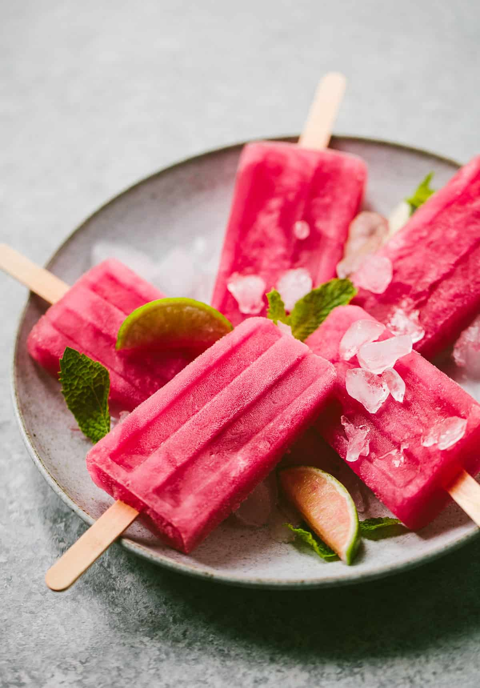

Mỗi loại thực phẩm khi ở nhiệt độ thích hợp sẽ cho hương vị ngon nhất và cũng tốt nhất cho cơ thể.
Kem ở nhiệt độ âm 13℃ – 15℃ là tốt nhất, khi ăn cũng có cảm giác sảng khoái nhất. Ở nhiệt độ này, khi kem vào trong miệng sẽ cảm thấy mềm, mịn, có vị thơm và không kích thích mạnh đến dạ dày.
Các loại nước hoa quả uống ở nhiệt độ 8℃-10℃ là thích hợp nhất, nếu thấp hơn nhiệt độ này thì sẽ không thưởng thức được hương vị thơm của hoa quả ở trong đó. Mỗi khi mở nắp ra nước hoa quả sẽ bắt đầu mất đi dinh dưỡng, vì vậy, không nên để nước hoa quả trong tủ lạnh quá lâu.
Nước hoa quả tươi vô khuẩn được làm từ cam, quýt, bưởi, dứa thì có thẻ giữ được từ 7- 10 ngày, các loại hoa quả có độ acid thấp khác như táo, nho thì sau khi mở nắp chỉ nên để lâu nhất là 7 ngày. Nếu bạn mua loại nước hoa quả chưa tẩy trùng qua nhiệt độ cao thì kể cả khi chưa mở nắp, trong vòng 5 ngày bạn phải uống hết.
Nước ép hoa quả là thức uống bổ dưỡng, có thể cung cấp nhiều vitamin, khoáng chất thiết yếu để bổ sung dinh dưỡng, tăng cường hệ miễn dịch, giúp đẹp da, giữ dáng và ngăn ngừa nhiều bệnh lý về tiêu hóa, tim mạch, ung thư…
Nhiệt độ uống thích hợp nhất các loại trà hoa quả và trà chua là 30℃ – 35℃. Các loại trà chua nếu dùng vào mùa đông nên uống nóng sau khi pha, uống từng hớp nhỏ rất dễ chịu bởi hương vị thấm dần, mùa hè trà chua nên được uống mát lạnh từ 15-18 ℃.
Hibiscus chứa một loại chất chống oxy hóa rất hiếm là Flavonoid. Hàm lượng flavonoid trong Hibiscus lên đến 12% trong đài quả và 5 - 6% trong lá. Flavonoid có tác dụng ngăn chặn quá trình lão hóa của cơ thể, giúp người sử dụng có thể giữ được nét thanh xuân của mình. Nhờ các dưỡng chất mà thiên nhiên ban tặng, Hibiscus có công dụng chữa trị các vấn đề liên quan tới tiêu hóa như đầy hơi. Không những vậy, uống trà hibiscus còn giúp nhuận tràng, chữa táo bón, lợi tiểu, viêm bàng quang và hạn chế sự tạo sỏi ở đường tiết niệu.
Trà Hibiscus là một nguồn cung cấp vitamin C lớn. Vitamin C từ lâu được biết là có rất nhiều tác dụng cho sức khỏe con người. Vitamin C cần thiết cho quá trình tổng hợp collagen để bạn có một làn da khỏe mạnh. Nó giúp ngăn cản sự phá hủy gây ra bởi các gốc tự do được tạo ra mỗi lần cơ thể hấp thụ thực phẩm. Đây chính là nguyên nhân chính gây ra quá trình lão hóa, bệnh ung thư, bệnh tim và chứng viêm khớp.
Dưa hấu ở nhiệt độ 8℃ là thuần khiết nhất. Rất nhiều người có thói quen ăn dưa hấu lạnh. Thực tế dưa hấu sau khi để lạnh, trên bề mặt sẽ hình thành một lớp màng, từ đó làm mất đi cảm giác ở miệng, thành phần nước trong dưa hấu cũng dễ đông thành băng, sau khi ăn có thể kích thích cổ họng hoặc gây ra đau răng, buốt răng. Ngoài ra, dưa hấu để quá lạnh còn làm tổn thương tì vị và dạ dày, gây ra tiêu hóa không tốt, mất cảm giác ăn uống….
Dưa hấu cũng chứa nhiều carotenoids, bao gồm beta-carotene và lycopene. Ngoài ra, nó có chứa citrulline, một axit amin quan trọng. Dưới đây là tổng quan về các chất chống oxy hóa quan trọng nhất của dưa hấu:
Theo group Sưu Tầm